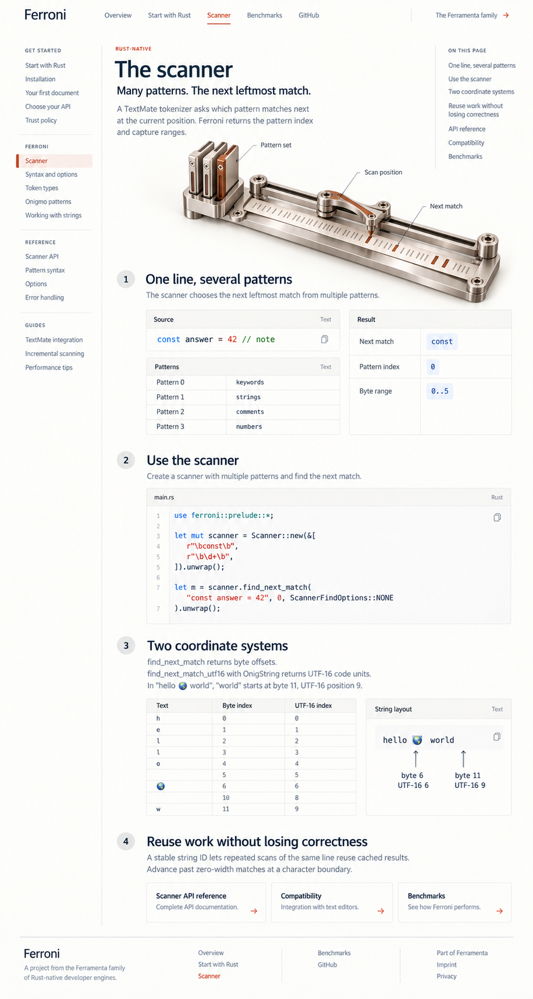

Eight core-page designs
Compare Ferromark: Rendering & metadata
Ferroni
The scanner
Overview
Start with Rust
The scanner
Benchmarks
Parallel patterns, the next match, and byte versus UTF-16 positions.

Previous: Start with Rust
Read source copy
Next: Benchmarks